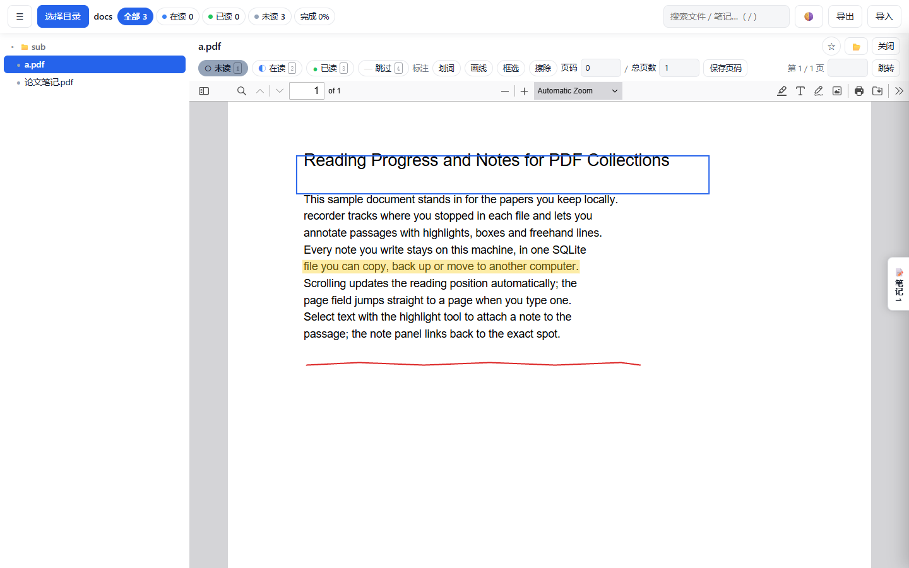
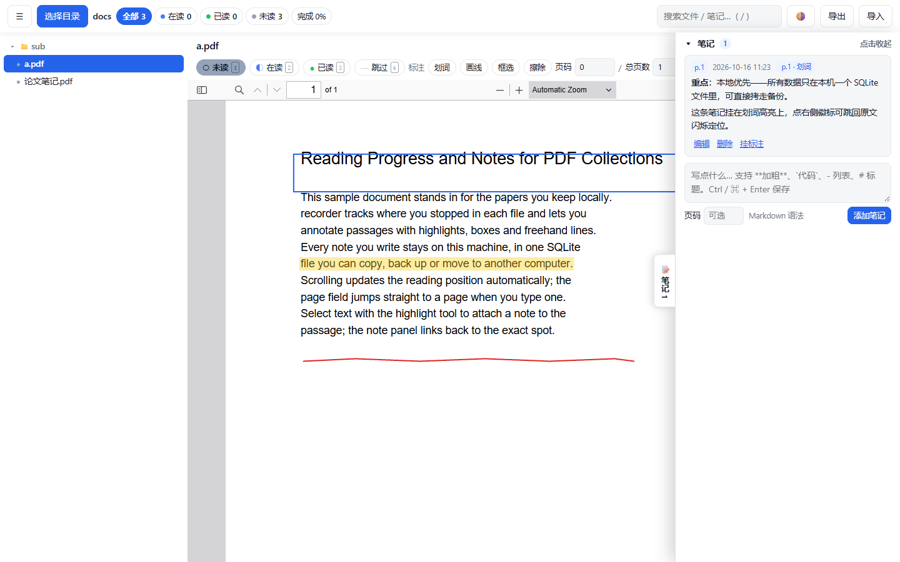
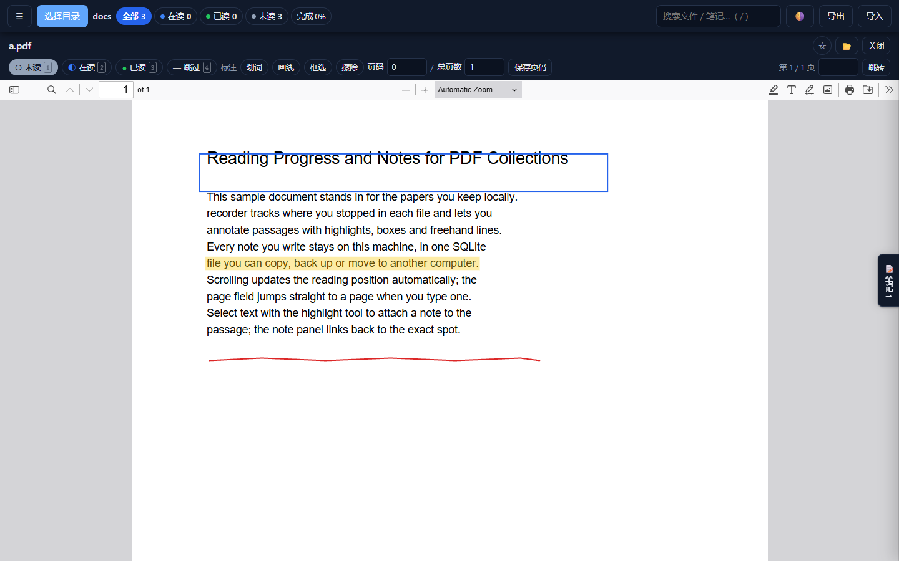

本地优先 · 单文件 exe
recorder
本地优先的 Windows PDF 阅读器 —— 阅读进度、笔记与标注，数据都存在你自己的电脑上。



下载
单文件 exe：下载、双击、跑，不写注册表也不要安装。 首次启动会请你选一个资料文件夹，之后每次开窗自动重扫。 若提示缺 WebView2 运行库，按弹窗链接装一次即可（装过 Edge 的机器一般已自带）。
- 系统
- Windows 10 / 11
- 安装
- 不需要 —— 单文件，不写注册表
- 账号 / 联网
- 都不需要，数据只在本机
- 数据位置
%APPDATA%\recorder\recorder.db
数据是可以直接找到、可以备份的独立文件。要迁移就用「导出 JSON」，备份格式和旧版网页应用通用。
功能
以下功能都已在 v0.0.1 里能用（不是「写完等接」，是真的能点）：
-
数据层 已就绪
进度、状态、星标、笔记、标注都存在一个 SQLite 文件里，不随浏览器缓存消失。
-
目录扫描 已就绪
指定一个根目录，递归列出里面所有 PDF；路径按相对路径记，换机器也能对上。
-
备份 / 迁移 已就绪
导出 JSON 备份，格式和旧版网页应用通用 —— 旧版导出的能直接导进来。
-
阅读状态与进度 已就绪
未读 / 在读 / 已读 / 跳过四态，滚动自动记进度（节流），星标收藏。
-
三种标注 已就绪
划词高亮、自由画线、矩形框选，归一化坐标跟着页面缩放不跑位，可擦除。
-
手写笔记 已就绪
笔记永远由你自己写，支持 Markdown，标注后就地弹框，也能在面板里挂到标注上。
-
笔记 ↔ 标注互链 已就绪
多对多关联；点笔记徽标跳回 PDF 对应位置并闪烁定位。
-
统计与搜索 已就绪
按状态统计，全文搜索笔记内容。
-
深色 / 浅色 已就绪
跟随系统切换，也可手动切换并记住选择。
-
阅读体验 已就绪
基于 pdf.js 官方阅读器：查找、打印、缩略图、大纲、缩放都留着。
快捷键
| J / K（或 ↓ ↑） | 跳到列表里下一个 / 上一个文件 |
|---|---|
| 1 2 3 4 | 设为待读 / 在读 / 已读 / 跳过 |
| S | 切换星标 |
| / | 光标进搜索框 |
| Enter | 页码框里回车 = 跳页 |
| Ctrl+Enter | 保存正在写的笔记 |
| Esc | 取消编辑中的笔记 |
常见问题
- 数据存在哪儿？
- 设计上只有一个 SQLite 文件：
%APPDATA%\recorder\recorder.db。 它会放在自己的应用数据目录里，不在程序旁边，所以卸载或移动程序都不会碰到它， 你也可以直接拷走这个文件当备份。 跑起来选过目录、写过进度或笔记，这个文件就会被创建出来。 - 资料目录被挪走、或者拔了移动硬盘，会怎样？
- 不会丢数据也不会崩。已经记录的进度和笔记都还在，程序会提示你重新选一个目录。 这是设计上的一条硬要求：目录失效时第一件事是保住已写的东西。
- 需要联网吗？要有账号吗？
- 都不需要。没有账号、没有云同步、没有遥测。程序运行起来之后完全不碰网络 —— 它只读你本机的 PDF 和写你本机的那个数据库文件。